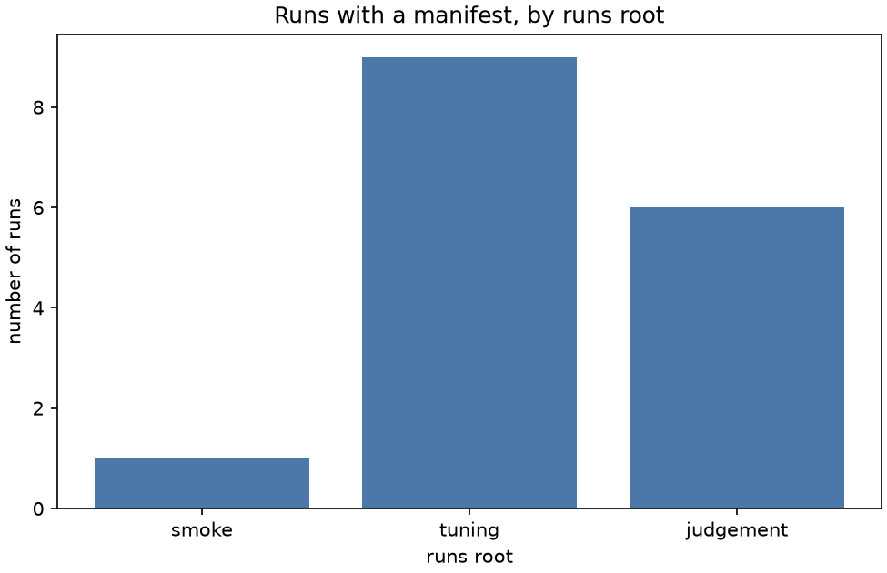

Stage report, step 2 of 8. Back to summary
| What | tools/make_sweep.py writes one .argos file per run from the headless template. |
|---|---|
| Why | Every real run needs its own seed, run folder and git stamp (DESIGN section 4). |
| Input data | pheromone_headless.template.argos. |
| Output data | 17 files in src/experiments/generated/. |
| Result (numbers) | 17 .argos files. Runs with a manifest: smoke 1, tuning 9, judgement 6. |
| Result (good or bad) | Good: smoke run has a manifest. |
| Status | ran |
Figure and table

| runs root | runs with manifest |
|---|---|
| smoke | 1 |
| tuning | 9 |
| judgement | 6 |